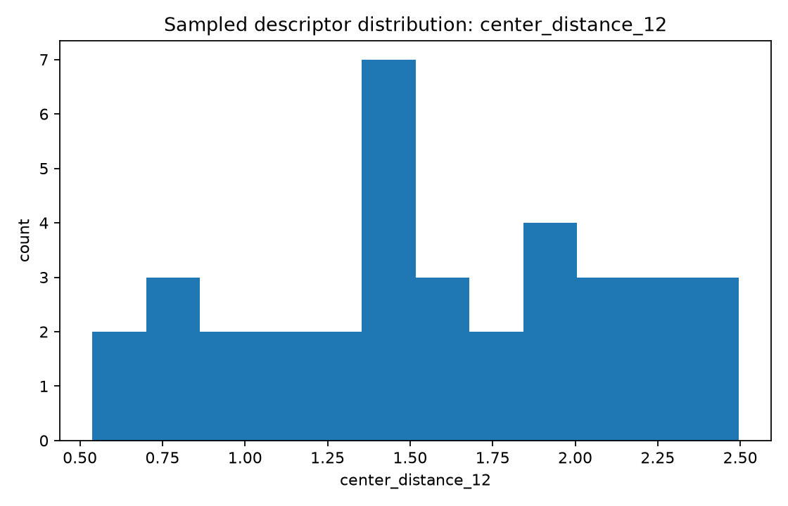
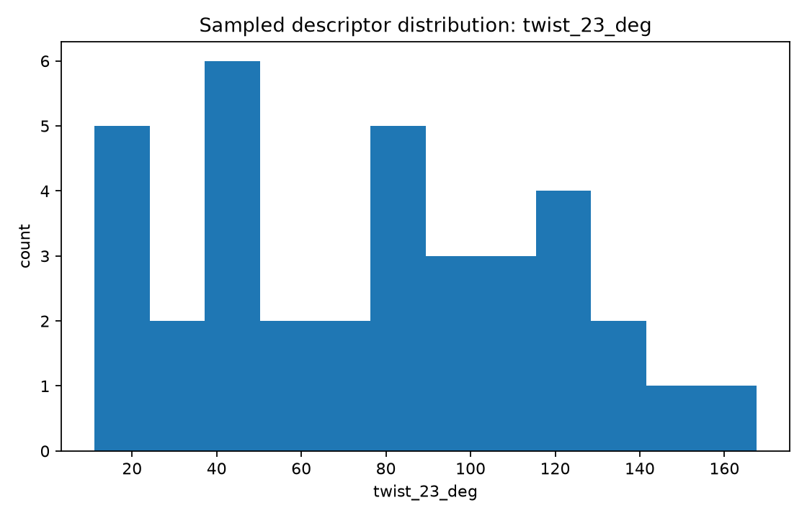
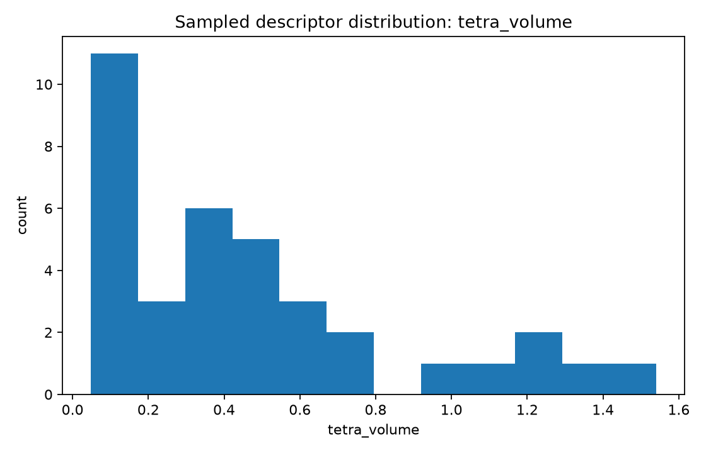

Focus: list a broad parameter inventory, generate initial synthetic geometry instances, and graph several descriptor distributions.
center_distance_12 — Normalized adjacent joint-center distance L12/Lrefcenter_distance_23 — Normalized adjacent joint-center distance L23/Lrefcenter_distance_34 — Normalized adjacent joint-center distance L34/Lreftwist_12_deg — Angle between consecutive axes near joints 1 and 2twist_23_deg — Angle between consecutive axes near joints 2 and 3twist_34_deg — Angle between consecutive axes near joints 3 and 4common_normal_13 — Shortest separation between selected nonadjacent axes 1 and 3common_normal_24 — Shortest separation between selected nonadjacent axes 2 and 4offset_1 — Signed offset along axis 1 to a common-normal constructionoffset_2 — Signed offset along axis 2 to a common-normal constructionaxis_to_center_1 — Distance from selected revolute axis 1 to an opposite joint centeraxis_to_center_2 — Distance from selected revolute axis 2 to an opposite joint centertetra_volume — Signed normalized tetrahedral volume built from four reference pointscoplanarity_residual — Near-zero indicates nearly planar center geometrychirality — Right- or left-handed center geometry flaghas_intersection_pair — Boolean flag for exact pairwise axis intersectionhas_mirror_symmetry — Boolean flag for mirror-symmetric construction


| Sample | Family | Seed | L12 | L23 | twist23 | tetra volume |
|---|---|---|---|---|---|---|
| uuur_000 | UUUR | 2582398 | 2.066 | 1.647 | 92.1 | 0.496 |
| uuur_001 | UUUR | 6756442 | 1.455 | 2.302 | 147.9 | 0.300 |
| uuur_002 | UUUR | 4855266 | 2.495 | 2.231 | 50.5 | 1.194 |
| uuur_003 | UUUR | 9118543 | 1.238 | 2.008 | 11.1 | 0.086 |
| uuur_004 | UUUR | 5321340 | 2.115 | 2.360 | 134.5 | 0.634 |
| uuur_005 | UUUR | 66136 | 1.879 | 1.376 | 50.1 | 0.794 |
| uuru_000 | UURU | 9284946 | 1.419 | 1.275 | 122.6 | 0.528 |
| uuru_001 | UURU | 9287731 | 1.553 | 2.299 | 35.0 | 0.589 |